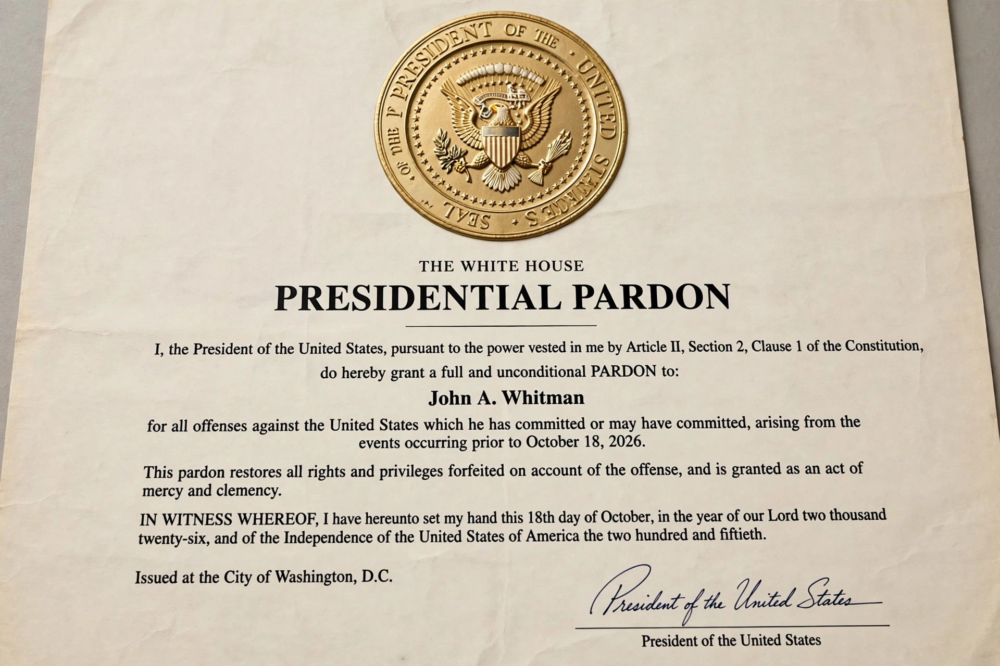

Pardon
A pardon is a government decision to allow a person to be relieved of some or all of the legal consequences of a criminal conviction. A pardon normally applies to a specific individual and offence; a general pardon granted to a class of offenders is usually called an amnesty. Pardons form part of the wider prerogative of mercy, alongside commutation (reducing a sentence), reprieve (postponing punishment), and remission.

By jurisdiction
United States
Article II of the US Constitution gives the President power to grant pardons for federal offences, "except in Cases of Impeachment." State governors hold similar powers for state crimes. The Justice Department's Office of the Pardon Attorney reviews applications, though presidents may grant pardons without its recommendation. Famous pardons include Gerald Ford's 1974 pardon of Richard Nixon for offences connected with Watergate.
United Kingdom
In the United Kingdom the royal prerogative of mercy is exercised by the monarch on the advice of ministers, usually the Secretary of State for Justice. It is now used sparingly, principally to remedy miscarriages of justice. Posthumous pardons have drawn attention, such as the 2013 royal pardon for Alan Turing and the statutory pardons for men convicted of abolished homosexual offences under the Policing and Crime Act 2017 ("Turing's law").
Canada
In Canada a pardon (now largely replaced by the "record suspension" administered by the Parole Board of Canada) seals a criminal record, while the royal prerogative of mercy remains for exceptional cases.
Effects and controversy
A pardon typically restores civil rights lost through conviction, though in some legal systems it does not erase the historical fact of the conviction. Pardons are controversial when granted to political allies, donors, or officials, because the power is usually discretionary and unreviewable.
See also
Categories: Pardon | Criminal law | Executive clemency